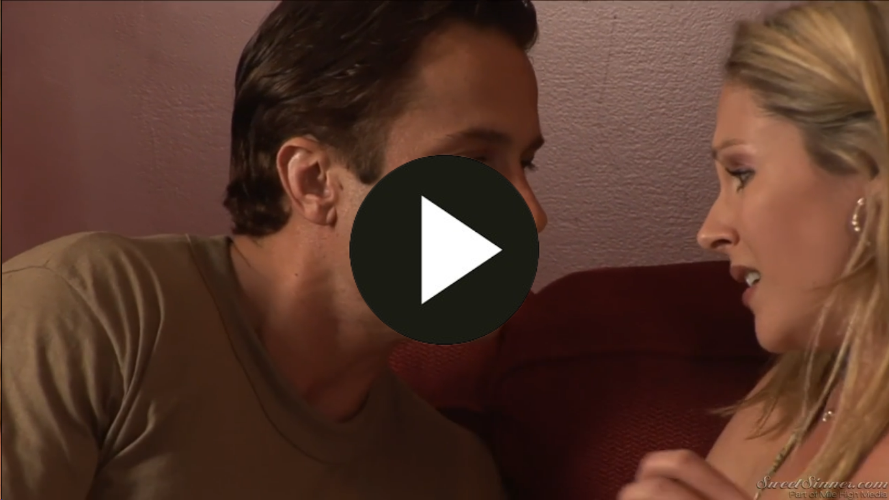

Encuentro Prohibido: Cuando la Pasión Desafía los Límites

En el cruce de destinos entrelazados, donde las sendas se bifurcan con decisiones cruciales, el anhelo surge como una luz que ilumina el camino hacia el mañana. En este laberinto de oportunidades, los compromisos se presentan como lazos que atan nuestras acciones a responsabilidades ineludibles, trazando la dirección de nuestras vidas.
Es en el desenlace de estas encrucijadas que se desvela la verdadera esencia del ser humano, pues es aquí donde las promesas se despliegan como un manto sagrado que se extiende sobre nuestras elecciones. Concluir no es simplemente poner fin, sino también cumplir con un pacto interno, honrar compromisos y afrontar las consecuencias de nuestras elecciones.
Este periplo no es solo una travesía física, sino un viaje emocional que lleva consigo una historia rica en matices, una narrativa entrelazada con los hilos de la pasión y la valentía. Cada paso dado en esta trama revela la fuerza interna que impulsa a superar obstáculos, la llama ardiente del deseo que ilumina el sendero a seguir.
Así, en este entramado de encrucijadas y anhelos, los compromisos se erigen como pilares fundamentales que sostienen la estructura de nuestras vidas. Honrar responsabilidades no es solo un acto de integridad, sino también la manifestación de un compromiso profundo con nosotros mismos y con aquellos que forman parte de nuestra existencia.
En última instancia, el cruce de destinos se convierte en el crisol donde se forja la identidad, donde las decisiones y los compromisos moldean el destino. Es una danza entre el deseo y la responsabilidad, una sinfonía de elecciones que, al final, componen la melodía única de nuestra propia historia.
En el entrelazado de senderos en la travesía de la vida, donde las encrucijadas se presentan como espejos de elecciones cruciales, el deseo se alza como una llama que ilumina la ruta hacia el futuro. En este laberinto de oportunidades, los compromisos actúan como nudos que atan nuestras acciones a responsabilidades inquebrantables, delineando el rumbo de nuestras existencias.
Es en el desenlace de estas encrucijadas que se desvela la verdadera esencia del ser humano, pues es aquí donde las promesas se desenvuelven como un velo sagrado que se posa sobre nuestras elecciones. Concluir no implica únicamente poner fin, sino también cumplir con un pacto interno, honrar compromisos y enfrentar las repercusiones de nuestras decisiones.
Este viaje no es solo una travesía física, sino un peregrinaje emocional que lleva consigo una narrativa rica en matices, una historia tejida con los hilos de la pasión y la valentía. Cada paso dado en este relato revela la fuerza interna que impulsa a superar obstáculos, la llama ardiente del deseo que ilumina el sendero por recorrer.
Así, en este entramado de encrucijadas y anhelos, los compromisos se erigen como pilares fundamentales que sostienen la arquitectura de nuestras vidas. Honrar responsabilidades no es solamente un acto de integridad, sino también la manifestación de un compromiso profundo con nosotros mismos y con aquellos que comparten nuestra existencia.
En última instancia, el cruce de senderos se convierte en el crisol donde se forja la identidad, donde las decisiones y los compromisos dan forma al destino. Es una danza entre el deseo y la responsabilidad, una sinfonía de elecciones que, al final, componen la melodía única de nuestra propia historia.
